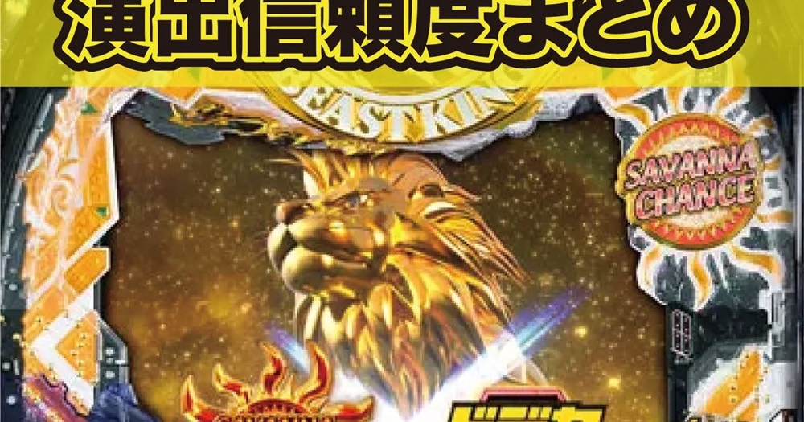

e 獣王 獅子の一撃
ドデカSTRAIGHTから、平均約9800個のサバンナチャンスへ。
- 導入
- 2026年11月
- メーカー
- Sammy
- 分類
- パチンコ
主要スペック
2026年11月2日から順次導入が始まったドデカSTRAIGHT搭載スマパチ。初当り約1/319.7、獣王RUSH突入50%、右打ち中約50%のサバンナチャンスを簡易体験できます。
- 通常時の大当り約1/319.7
- 獣王RUSH突入50%・継続約50%
- RUSH中約50%で平均約9800個のサバンナチャンス
e 獣王 獅子の一撃の見どころと計算条件
2026年11月2日から順次導入が始まったドデカSTRAIGHT搭載スマパチ。初当り約1/319.7、獣王RUSH突入50%、右打ち中約50%のサバンナチャンスを簡易体験できます。
e獣王 獅子の一撃を数字で早分かり
結果では表記出玉と実獲得出玉を分け、250玉貸し・28玉交換の固定条件で差玉と収支を計算します。
30秒で分かるe獣王 獅子の一撃
RUSH突入・継続がともに約50%である一方、右打ち大当りの約半分に平均約9800個のサバンナチャンスを置く振れ幅の大きい機種です。連チャン数より一度の出玉契機を重視して比べられます。
こんな遊び方に向いている
- 低継続でも大きな出玉契機を狙う流れを見たい
- ドデカSTRAIGHTの固定回転率を投資へ反映したい
- 通常結果とサバンナチャンス結果の差を比べたい
遊ぶ前に確認したいこと
- RUSH非突入と単発終了が続く可能性がある
- サバンナチャンスは上乗せ過程を省き平均9800個で表示
- 18回/1,000円は比較用の固定値で実店舗を保証しない
ドデカSTRAIGHTを固定回転率へ反映
通常時約1/319.7で、玉がスタート方向へ向かいやすい新ゲージのドデカSTRAIGHTを搭載しています。
シミュレーターは比較用に18.0回/1,000円へ固定します。実店舗の釘調整や実測回転率を保証する値ではありません。
獣王RUSHは突入・継続とも約50%
初当りは約300個で、その50%が100回転の獣王RUSHへ進みます。RUSH中確率は約1/144.7で、継続率は約50%です。
短い継続率の代わりに、右打ち中当りの出玉振り分けが大きい設計です。
約50%でサバンナチャンス
RUSH中大当りの約50%は、最低4500個＋上乗せループのサバンナチャンス。公表される平均出玉は約9800個です。
サイトでは上乗せ回数を個別抽選せず、代表値9800個を1つの出玉結果として扱います。3000個は1500個×2回としてまとめています。
固定レートと収支の条件
- 18.0回/1,000円・250玉貸し・28玉交換で固定
- 平均初当り投資目安は約17,800円
- サバンナチャンスは平均9800個で簡易化
- 結果は自動でマイ記録へ保存
平均回転と投資目安の計算
通常時の初当り確率は約1/319.7です。当サイトでは、1,000円あたり18回転という機種別の固定条件を使い、平均投資目安を「319.7 ÷ 18 × 1,000円」で計算します。この条件では約17,800円が平均投資の目安です。
ドデカSTRAIGHT、250玉貸し・28玉交換で固定し、獣王RUSH突入率50%と継続率50%を簡易抽選します。表記出玉とは別に、打ち出しとオーバー入賞を簡易反映した実獲得出玉を収支へ使用します。平均値は長期間の理論上の目安であり、1回ごとの結果や実際の遊技収支を保証するものではありません。
シミュレーション結果の見方
当るまで初当りまでの回転数と投資目安
RUSH獣王RUSHへの突入と連チャン回数
出玉表記出玉と、打ち出しを反映した実獲得出玉
最終収支実獲得出玉を28玉交換で換算した収支目安
結果は自動で「マイ記録」に保存され、同じ機種を何回試したか、最高収支、勝率をあとから確認できます。
簡易シミュレーターについて
初当り・獣王RUSH・出玉の流れを固定条件で体験できます。JavaScriptを有効にすると、この位置にシミュレーター、演出、マイ記録、機種別ランキングが表示されます。
結果は娯楽・確率理解のための参考表示です。金銭的価値や交換価値はなく、実際の勝敗や収支を保証しません。18歳未満の方の利用はお控えください。
e獣王 獅子の一撃のよくある質問
e獣王 獅子の一撃はどんな台？
2026年11月2日から順次導入が始まったドデカSTRAIGHT搭載スマパチ。 通常時の大当り約1/319.7が主な確認ポイントです。
e獣王 獅子の一撃の平均投資目安は？
当サイトの固定条件では1,000円あたり18回転として、平均17,800円が目安です。実店舗の回転率や持ち玉状況で変わるため、実収支を保証する値ではありません。
シミュレーターでは何を体験できる？
初当りまでの回転数、獣王RUSHへの突入、連チャンと出玉を固定条件で簡易抽選します。実機の全演出や内部状態を完全再現するものではありません。
出玉と収支はどう計算する？
スペック上の表記出玉とは別に、打ち出しロスとオーバー入賞を簡易反映した実獲得出玉を算出します。250玉貸し・28玉交換の固定条件で差玉と収支目安を表示します。